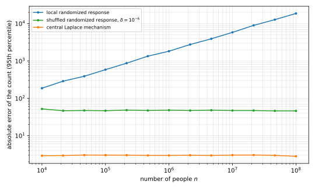

18 The Shuffle Model and Central Deployments
The local model of the previous chapter trusts no one, and pays with an error \(\sqrt n\) times larger than the central model’s. This chapter first studies a middle ground for differential privacy (DP), the shuffle model, in which a party that only mixes messages lets each person add far less noise. It then turns to the central model, where a company holds the data, and studies a query service for outside analysts and two public data releases.
18.1 Encode, shuffle, analyze
Google’s Prochlo system started from a failure of local privacy. Its designers wanted to count which of a thousand applications call which of a hundred system interfaces, \(10^5\) pairs in all. By their estimate, a local protocol such as RAPPOR would need reports from about a trillion people to count them usefully, more people than exist.
Their architecture has three stages, encode, shuffle, analyze. Each person encodes their data on their own device, for example with a local randomizer. A shuffler collects the encoded messages, removes their metadata such as arrival times and network addresses, and sends them on in a uniformly random order. The analyst sees only the shuffled batch and decodes statistics from it. So the shuffler has one job, which is to break the link between a message and its sender.
The users must trust the shuffler not to reveal the order. Prochlo runs it inside trusted hardware, an Intel SGX enclave, so trust rests on the hardware vendor. Side-channel attacks such as Spectre have shown that such hardware can leak. Another choice is a mix network of several servers, each of which shuffles and re-encrypts the batch. Then the order stays hidden unless all of them collude.
18.2 The shuffle model
Prochlo led to a formal model between the local and central ones. In it, the adversary sees the shuffled messages but not who sent which.
Definition 18.1 (Shuffle model) A protocol in the shuffle model gives each person the same randomizer \(R\colon \mathcal X \to \mathcal Y\). Person \(i\) sends \(Y_i = R(X_i)\), using randomness independent of everyone else’s, and the shuffler outputs \((Y_{\pi(1)}, \dots, Y_{\pi(n)})\) for a permutation \(\pi\) drawn uniformly at random. The protocol is \((\varepsilon, \delta)\)-DP in the shuffle model if this shuffled output, as a mechanism on the dataset \(D\), is \((\varepsilon,\delta)\)-DP in the central sense.
The uniform order adds no information, so the shuffled output carries the same information as the multiset of messages. A local protocol is also a shuffle protocol with the same guarantee, because the shuffled output is a post-processing of the messages. The interesting protocols are those whose messages are not private one by one but become private once mixed.
The benchmark task is again a sum of bits. In the central model, a count plus Laplace noise of scale \(1/\varepsilon\) has error of order \(1/\varepsilon\). In the local model each person adds noise of that size, so the \(n\) independent noises add up to a standard deviation of order \(\sqrt n/\varepsilon\), and by the previous chapter’s lower bound no local protocol does better. The question is how close the shuffle model can get to \(1/\varepsilon\).
18.3 Amplification by shuffling
The first answer holds for any local randomizer, because shuffling makes it more private, just as subsampling did in an earlier chapter. In the form first proved, a message that is \(\varepsilon_0\)-private on its own gives a shuffled batch whose parameter is smaller by a factor of order \(\sqrt n\).
Theorem 18.1 (Amplification by shuffling) Let \(n \ge 1000\), \(\delta \in (0, \frac1{100})\), and let \(R\) be an \(\varepsilon_0\)-local randomizer with \(0 < \varepsilon_0 < \frac12\). Then the shuffled output of \(R(X_1), \dots, R(X_n)\) is \((\varepsilon, \delta)\)-DP with
\[ \varepsilon = 12\,\varepsilon_0\sqrt{\frac{\ln(1/\delta)}{n}} . \tag{18.1}\]
The proof is in Erlingsson and coauthors (2019, Theorem 7 and Corollary 9). When everyone uses the same randomizer, shuffling the records before randomizing them gives the same output distribution, and the proof works in that form. It moves the one differing record to the front, swaps it into a uniformly random position, and then bounds how much each later message reveals about that position.
The theorem applies only to randomizers that are already very private, but few deployments want \(\varepsilon_0 \le \frac12\), because local accuracy is worst there. Feldman, McMillan and Talwar (2021) cover the useful regime, \(\varepsilon_0\) of order \(\ln n\), where \(\varepsilon\) is still a constant. For every \(\varepsilon_0 \le \ln\big(n/(16\ln(2/\delta))\big)\), they give \(\varepsilon = O\big((1 - e^{-\varepsilon_0})\sqrt{e^{\varepsilon_0}\ln(1/\delta)/n}\big)\). In their proof, the message of each other person is, with probability \(e^{-\varepsilon_0}\), a “clone” of what the differing person might have sent, and the count of clones hides that person. The next section carries out this idea in full for one simple randomizer.
18.4 Counting bits in the shuffle model
For a sum of bits, a direct protocol reaches error of order \(\sqrt{\ln(1/\delta)}/\varepsilon\), which does not depend on \(n\). Its randomizer is randomized response in which almost everyone tells the truth.
Definition 18.2 (Shuffled randomized response) Fix a coin probability \(\nu \in (0,1]\). Person \(i\), with bit \(X_i\), sends \(Y_i = X_i\) with probability \(1 - \nu\), and otherwise sends a fresh fair coin. The analyst sees the shuffled reports, counts their ones as \(Z = \sum_{i=1}^n Y_i\), and estimates the count \(c = \sum_{i=1}^n X_i\) by
\[ \tilde c = \frac{Z - n\nu/2}{1 - \nu}. \tag{18.2}\]
In the local model \(\nu\) would be a constant. Here it is of order \(\ln(1/\delta)/(\varepsilon^2 n)\), so only about \(\ln(1/\delta)/\varepsilon^2\) people in total send coins. These coins hide each single person, as the clones did above. Two lemmas prepare the proof, and both use \(\tau = \tanh(\varepsilon/2)\), the number for which \((1+\tau)/(1-\tau) = e^\varepsilon\). The first says that, when \(s\) is large, the number of ones among \(s\) fair coins hides whether one more bit, of any distribution, is added to it.
Lemma 18.1 Let \(\varepsilon > 0\), let \(\tau = \tanh(\varepsilon/2)\), and let \(s \ge 2/\tau\) be an integer. Let \(N\) be binomial with \(s\) trials and success probability \(\frac12\), and let \(B\) and \(B'\) be Bernoulli variables independent of \(N\), with any parameters. Then for every set \(S\) of integers,
\[ \Pr[N + B \in S] \le e^{\varepsilon}\,\Pr[N + B' \in S] + 2e^{-s\tau^2/8}. \tag{18.3}\]
Proof.
- Write \(P(k) = \Pr[N = k] = \binom sk 2^{-s}\). For \(1 \le k \le s\), the ratio of consecutive probabilities is \(P(k-1)/P(k) = k/(s+1-k)\).
- Let \(K\) be the set of integers \(k\) with \(|k - \frac{s+1}2| \le \frac{s+1}2\tau\). Writing \(k = \frac{s+1}2(1+v)\) with \(|v| \le \tau\), the ratio becomes \((1+v)/(1-v)\), which lies in \([e^{-\varepsilon}, e^{\varepsilon}]\). Since \(\tau < 1\), every \(k \in K\) satisfies \(1 \le k \le s\).
- For \(k \in K\) and any Bernoulli parameter \(b\), \(\Pr[N + B = k] = (1-b)P(k) + bP(k-1)\) is at most \(\max(P(k), P(k-1))\). By step 2 this is at most \(e^\varepsilon\min(P(k), P(k-1))\), which is at most \(e^{\varepsilon}\Pr[N + B' = k]\).
- Outside \(K\), use \(|N + B - \frac{s+1}2| \le |N - \frac s2| + \frac12\). So \(N + B \notin K\) requires \(|N - \frac s2| > \frac{(s+1)\tau - 1}{2}\), and this threshold is at least \(s\tau/4\) because \(s\tau \ge 2\). Hoeffding’s inequality for \(s\) fair coins gives \(\Pr[N + B\notin K] \le 2\exp(-2(s\tau/4)^2/s) = 2e^{-s\tau^2/8}\).
- Split \(S\) into \(S \cap K\), bounded by step 3, and the rest, bounded by step 4.
The second lemma makes sure that enough people send coins. It is a lower tail bound for the binomial distribution, sharper than Hoeffding’s inequality when the mean is small.
Lemma 18.2 Let \(N\) be binomial with mean \(\mu\). Then
\[ \Pr\!\left[N \le \frac\mu2\right] \le \exp\!\left(-\frac{(1-\ln 2)\,\mu}{2}\right). \tag{18.4}\]
Proof.
- Let \(N\) have \(m\) trials with success probability \(p\), so \(\mu = mp\). For \(\lambda > 0\), Markov’s inequality applied to \(e^{-\lambda N}\) gives \(\Pr[N \le a] \le e^{\lambda a}\,\mathbb E[e^{-\lambda N}]\).
- The trials are independent, so \(\mathbb E[e^{-\lambda N}] = (1 - p + pe^{-\lambda})^m\). Using \(1 + z \le e^z\), this is at most \(\exp\big(\mu(e^{-\lambda} - 1)\big)\).
- Take \(a = \mu/2\) and \(\lambda = \ln 2\). The exponent becomes \(\mu\ln 2/2 - \mu/2\).
The privacy theorem chooses \(\nu\) so that, by Lemma 18.2, enough people send coins with high probability. By Lemma 18.1, those coins then hide the one person in question.
Theorem 18.2 (Privacy of shuffled randomized response) Let \(\varepsilon > 0\), \(\delta \in (0,1)\), \(\tau = \tanh(\varepsilon/2)\) and \(n \ge 1 + 16\ln(4/\delta)/\tau^2\), and set
\[ \nu = \frac{16\ln(4/\delta)}{\tau^2(n-1)} . \tag{18.5}\]
Then shuffled randomized response is \((\varepsilon,\delta)\)-DP in the shuffle model.
Proof.
- Reduce to the count. Given the count \(Z\), every arrangement of the shuffled bits with \(Z\) ones is equally likely. So the shuffled output and \(Z\) are functions of each other, up to independent randomness, and it suffices to prove that \(Z\) is \((\varepsilon,\delta)\)-DP.
- Isolate one person. The count does not depend on the order of the people, so we may take neighbours \(D \sim D'\) that differ by replacing the record of person \(1\). Let \(J\) be the set of persons \(i \ge 2\) who send coins. Its law does not depend on the data, and given \(J\),
\[ Z = C_J + N + Y_1, \qquad C_J = \sum_{i \ge 2,\ i \notin J} X_i, \tag{18.6}\]
where \(N\) counts the ones among the \(|J|\) fair coins. Both \(C_J\) and the law of \(N\) are the same under \(D\) and \(D'\), and only the Bernoulli variable \(Y_1\) changes. 3. Enough coins. Let \(s_0 = 8\ln(4/\delta)/\tau^2\). The size \(|J|\) is binomial with mean \((n-1)\nu = 2s_0\). By Lemma 18.2, \(\Pr[|J| < s_0] \le \exp(-(1-\ln 2)\,8\ln(4/\delta)/\tau^2)\). Since \(8(1-\ln 2) > 2\) and \(\tau < 1\), this is at most \((\delta/4)^2 \le \delta/4\). 4. Each large \(J\) is private. If \(|J| \ge s_0\), then \(|J|\tau \ge 8\ln 4/\tau > 2\), so Lemma 18.1 applies. Its error term is \(2e^{-|J|\tau^2/8} \le 2e^{-\ln(4/\delta)} = \delta/2\). Shifting by the constant \(C_J\) preserves the inequality, so for every event \(S\), \(\Pr_D[Z \in S \mid J] \le e^\varepsilon\Pr_{D'}[Z\in S \mid J] + \delta/2\). 5. Average over \(J\). Summing over sets with \(|J| \ge s_0\) and adding the probability of the others,
\[ \Pr_D[Z \in S] \le e^{\varepsilon}\Pr_{D'}[Z \in S] + \frac\delta2 + \frac\delta4 \le e^{\varepsilon}\Pr_{D'}[Z \in S] + \delta. \tag{18.7}\]
The coins also add error to the count. But only about \(n\nu\) people send them, so the error depends on \(n\nu\), which Equation 18.5 keeps independent of \(n\).
Theorem 18.3 (Accuracy of shuffled randomized response) For every dataset, \(\tilde c\) is an unbiased estimate of \(c\) with variance at most \(n\nu/(2(1-\nu)^2)\). With \(\nu\) as in Equation 18.5 and \(\beta \in (0,1)\), with probability at least \(1 - \beta\),
\[ |\tilde c - c| \le \frac{1}{1-\nu}\sqrt{\frac{n\nu}{2\beta}} \le \frac{4}{(1-\nu)\,\tau}\sqrt{\frac{\ln(4/\delta)}{\beta}} . \tag{18.8}\]
For \(\varepsilon \le 1\) and \(\nu \le \frac12\), the right-hand side is at most \(18\sqrt{\ln(4/\delta)/\beta}\,/\varepsilon\).
Proof.
- Each report is \(1\) with probability \((1-\nu)X_i + \nu/2\), so \(\mathbb E[Z] = (1-\nu)c + n\nu/2\), and \(\tilde c\) is unbiased.
- Each report is a Bernoulli variable with parameter \(\nu/2\) or \(1 - \nu/2\), so its variance is \(\frac \nu2(1 - \frac \nu2) \le \frac \nu2\). The reports are independent, so \(\operatorname{Var}(Z) \le n\nu/2\) and \(\operatorname{Var}(\tilde c) \le n\nu/(2(1-\nu)^2)\).
- Chebyshev’s inequality gives the first bound. For the second, \(n\nu = 16\ln(4/\delta)\,n/(\tau^2(n-1)) \le 32\ln(4/\delta)/\tau^2\) when \(n \ge 2\).
- The function \(\tanh\) is concave on \([0,\infty)\), so \(\tau \ge \tanh(\frac12)\,\varepsilon = 0.462\,\varepsilon\) for \(\varepsilon \le 1\). With \(1/(1-\nu) \le 2\), the constant is \(8/0.462 < 18\).
So the shuffled count has error \(O(\sqrt{\ln(1/\delta)}/\varepsilon)\), which does not grow with \(n\). That is within a factor \(\sqrt{\ln(1/\delta)}\) of the central model and far from the local model’s \(\sqrt n/\varepsilon\), as Figure 18.1 shows over \(n\) and the example below shows at one setting.
Example 18.1 Take \(\varepsilon = 1\), \(\delta = 10^{-6}\) and \(n = 10^6\). Then \(\tau = 0.4621\), and Equation 18.5 gives \(\nu = 0.001139\), so about \(1{,}139\) people send coins. The standard deviation of \(\tilde c\) is at most \(23.9\). Local randomized response at the same \(\varepsilon\) has standard deviation \(\sqrt n\,e^{1/2}/(e - 1) = 959.5\), and central Laplace noise has \(\sqrt 2 = 1.414\).

The price is trust in the shuffler. Each message on its own is randomized response that keeps the true bit with probability \(1 - \nu/2\), so it is only \(\varepsilon_0\)-locally private with \(\varepsilon_0 = \ln((2-\nu)/\nu) = 7.47\) in the example. So a shuffler that leaked the order would expose almost every bit. This \(\varepsilon_0\) is below \(\ln\big(n/(16\ln(2/\delta))\big) = 8.37\), so the protocol lies in the range that the clone analysis of the previous section covers.
18.5 A query service: LinkedIn
LinkedIn’s audience engagements service lets advertisers ask how members in a target audience engage with content, such as which articles or topics they click on most. It runs in the central model, so LinkedIn holds the data and answers each query with a private mechanism. This section covers two results of the research for it, a sharper analysis of the exponential mechanism and a fast way to run it.
18.5.1 Bounded range
Recall the exponential mechanism. It takes a score \(u(D, r)\) for each candidate \(r\) in a countable set, whose value changes by at most \(\Delta u\) between neighbours. It outputs \(r\) with probability proportional to \(\exp(\varepsilon u(D,r)/(2\Delta u))\), and it is \(\varepsilon\)-DP. Write
\[ L(y) = \ln\frac{\Pr[M(D) = y]}{\Pr[M(D') = y]} \tag{18.9}\]
for the privacy loss of output \(y\) between neighbours \(D\) and \(D'\). Pure \(\varepsilon\)-DP says that \(|L(y)| \le \varepsilon\), so the losses lie in an interval of width \(2\varepsilon\). The exponential mechanism satisfies a stronger condition.
Definition 18.3 (Bounded range) A mechanism \(M\) with a countable output set is \(\varepsilon\)-bounded range if for all neighbours \(D \sim D'\) and all outputs \(y, y'\),
\[ \Pr[M(D) = y]\,\Pr[M(D') = y'] \le e^{\varepsilon}\,\Pr[M(D') = y]\,\Pr[M(D) = y'] . \tag{18.10}\]
When the outputs have positive probability, the definition says that \(L(y) - L(y') \le \varepsilon\). So the privacy losses lie in an interval of width \(\varepsilon\), which need not be centred at zero. The next result shows that the two notions are within a factor of two of each other.
Proposition 18.1 An \(\varepsilon\)-bounded range mechanism is \(\varepsilon\)-DP. An \(\varepsilon\)-DP mechanism with a countable output set is \(2\varepsilon\)-bounded range.
Proof.
- Same support. Let \(M\) be \(\varepsilon\)-bounded range. Suppose some output \(y\) has \(\Pr[M(D) = y] > 0\) but \(\Pr[M(D') = y] = 0\). With this \(y\), the right-hand side of the definition is zero for every \(y'\), and the left-hand side is \(\Pr[M(D) = y]\) times \(\Pr[M(D') = y']\). So the definition forces \(\Pr[M(D') = y'] = 0\) for every \(y'\), which is impossible. So \(M(D)\) and \(M(D')\) give positive probability to the same outputs, and \(L\) is finite on them.
- Both signs occur. Both distributions sum to one over the common support, so some output \(y_+\) has \(L(y_+) \ge 0\) and some output \(y_-\) has \(L(y_-) \le 0\).
- Width \(\varepsilon\) around zero. For every \(y\), bounded range gives \(L(y) \le L(y_-) + \varepsilon \le \varepsilon\) and \(L(y) \ge L(y_+) - \varepsilon \ge -\varepsilon\). The pointwise lemma of the randomized response chapter turns \(|L| \le \varepsilon\) into \(\varepsilon\)-DP.
- Converse. If \(|L| \le \varepsilon\) everywhere, then \(L(y) - L(y') \le 2\varepsilon\).
The general conversion loses a factor of two, but the exponential mechanism does not, because its privacy losses already lie in an interval of width \(\varepsilon\).
Proposition 18.2 The exponential mechanism with parameter \(\varepsilon\) is \(\varepsilon\)-bounded range.
Proof.
- Write \(Z_D = \sum_r \exp(\varepsilon u(D,r)/(2\Delta u))\) for the normalizing constant. Then \(L(r) = \frac{\varepsilon}{2\Delta u}\big(u(D,r) - u(D',r)\big) + \ln(Z_{D'}/Z_D)\).
- The constant cancels in a difference: \(L(r) - L(r') = \frac{\varepsilon}{2\Delta u}\big[(u(D,r) - u(D',r)) - (u(D,r') - u(D',r'))\big]\).
- Each bracketed difference is at most \(\Delta u\) in absolute value, so \(L(r) - L(r') \le \varepsilon\).
The factor of two matters when many selections are composed, and two lemmas make the composition precise. The first turns a tail bound on the privacy loss into a privacy guarantee. It holds for any output space, with \(L\) the logarithm of the ratio of mass functions or of densities.
Lemma 18.3 Let \(\varepsilon' \ge 0\) and \(\delta \in [0,1]\). If for all neighbours \(D \sim D'\) the loss satisfies \(\Pr_{y \sim M(D)}[L(y) > \varepsilon'] \le \delta\), then \(M\) is \((\varepsilon', \delta)\)-DP.
Proof. Fix an event \(S\) and let \(G = \{y : L(y) \le \varepsilon'\}\). On \(S \cap G\) the probability under \(D\) is at most \(e^{\varepsilon'}\) times that under \(D'\), so \(\Pr[M(D) \in S\cap G] \le e^{\varepsilon'}\Pr[M(D')\in S]\). The rest of \(S\) has probability at most \(\Pr[M(D) \notin G] \le \delta\) under \(D\).
The second lemma bounds the mean loss. It uses Hoeffding’s lemma, the key step in the proof of Hoeffding’s inequality: a random variable \(W\) in an interval of length \(\ell\) satisfies \(\mathbb E[e^{\lambda(W - \mathbb E W)}] \le e^{\lambda^2\ell^2/8}\) for every real \(\lambda\).
Lemma 18.4 If \(M\) is \(\varepsilon\)-bounded range and \(D \sim D'\), then \(\mathbb E_{y\sim M(D)}[L(y)] \le \varepsilon^2/8\).
Proof.
- Under \(y \sim M(D)\), the variable \(W = -L(y)\) lies in an interval of length \(\varepsilon\), and \(\mathbb E[e^{W}] = \sum_y \Pr[M(D) = y]\,\frac{\Pr[M(D')=y]}{\Pr[M(D)=y]} = 1\).
- Hoeffding’s lemma with \(\lambda = 1\) gives \(1 = \mathbb E[e^W] \le e^{\mathbb E W + \varepsilon^2/8}\), so \(\mathbb E[L] = -\mathbb E[W] \le \varepsilon^2/8\).
The two lemmas combine into a composition theorem. The total privacy loss of \(k\) steps is a sum of \(k\) losses, each with mean at most \(\varepsilon^2/8\) and a range of width \(\varepsilon\). So the sum concentrates around \(k\varepsilon^2/8\), and Lemma 18.3 turns that concentration into a guarantee.
Theorem 18.4 (Composition of bounded-range mechanisms) Run \(k\) mechanisms in sequence on the same dataset, where the \(j\)-th may be chosen as a function of the outputs of the first \(j-1\), and each is \(\varepsilon\)-bounded range whatever those outputs are. For every \(\delta \in (0,1)\), the sequence of outputs is \((\varepsilon', \delta)\)-DP with
\[ \varepsilon' = \frac{k\varepsilon^2}{8} + \varepsilon\sqrt{\frac{k\ln(1/\delta)}{2}} . \tag{18.11}\]
Proof.
- The probability of an output sequence is the product of the conditional probabilities of its terms, so the loss is a sum \(L = \sum_{j=1}^k L_j\), where \(L_j\) is the loss of the \(j\)-th output given the earlier ones.
- Given the earlier outputs, \(L_j\) lies in an interval of length \(\varepsilon\), by bounded range, and its conditional mean is at most \(\varepsilon^2/8\), by Lemma 18.4. Let \(V_j\) be \(L_j\) minus its conditional mean, so \(L \le \sum_j V_j + k\varepsilon^2/8\).
- For \(\lambda > 0\), Hoeffding’s lemma applied conditionally gives \(\mathbb E[e^{\lambda V_j} \mid \text{earlier outputs}] \le e^{\lambda^2\varepsilon^2/8}\). Taking conditional expectations from the last term to the first gives \(\mathbb E[e^{\lambda\sum_j V_j}] \le e^{k\lambda^2\varepsilon^2/8}\).
- By Markov’s inequality, \(\Pr[\sum_j V_j \ge t] \le e^{-\lambda t + k\lambda^2\varepsilon^2/8}\). Choosing \(\lambda = 4t/(k\varepsilon^2)\) makes this \(e^{-2t^2/(k\varepsilon^2)}\), which equals \(\delta\) at \(t = \varepsilon\sqrt{k\ln(1/\delta)/2}\).
- So \(\Pr[L > \varepsilon'] \le \delta\) for every pair of neighbours, and Lemma 18.3 finishes the proof.
Advanced composition gives \(\varepsilon\sqrt{2k\ln(1/\delta)} + k\varepsilon\tanh(\varepsilon/2)\) for \(k\) mechanisms that are known only to be \(\varepsilon\)-DP. The square-root term of Theorem 18.4 is half as large. Its linear term \(k\varepsilon^2/8\) is also about a quarter of \(k\varepsilon\tanh(\varepsilon/2) \approx k\varepsilon^2/2\) for small \(\varepsilon\).
Example 18.2 Compose \(k = 100\) exponential mechanisms, each with \(\varepsilon = 0.1\), at \(\delta = 10^{-6}\). Basic composition gives \(10.00\), advanced composition \(5.76\), and Theorem 18.4 gives \(2.75\).
18.5.2 Top-\(k\) selection with Gumbel noise
An advertiser usually wants the few most popular items in a histogram, such as the top topics among an audience, not every count. LinkedIn’s algorithms depend on two things. The domain of items is known in advance or not. And a person’s contribution is \(m\)-restricted when each person adds one to at most \(m\) counts, and unrestricted otherwise. For example, hires are \(1\)-restricted, because a hire adds one to one employer, but skills are not, because one person can list many.
With \(m\)-restricted contributions, replacing one person changes the vector of counts by at most \(2m\) in \(\ell_1\) norm. So Laplace noise of scale \(2m/\varepsilon\) on every count, followed by taking the top \(k\), is \(\varepsilon\)-DP, but its noise grows with \(m\). For unrestricted contributions it is better to select with the exponential mechanism, with the count of an item as its score. A count changes by at most one between neighbours, whatever the number of counts that a person touches. Peeling selects the top item, removes it, and repeats \(k\) times. Each round is the exponential mechanism, so by Proposition 18.2 and Theorem 18.4 its cost depends on \(k\) and not on \(m\).
Sampling from the exponential mechanism needs its normalizing constant, and peeling needs it \(k\) times. Adding noise of the right shape and taking a maximum avoids both, and the right shape is the Gumbel distribution.
Definition 18.4 (Gumbel distribution) The Gumbel distribution with scale \(b > 0\) has cumulative distribution function \(\Pr[G \le g] = \exp(-e^{-g/b})\) for real \(g\).
Adding independent Gumbel noise to each score and taking the largest gives exactly the distribution of the exponential mechanism, and taking the \(k\) largest gives exactly peeling.
Theorem 18.5 (Gumbel-max trick) Let \(u_1, \dots, u_d\) be scores, let \(G_1, \dots, G_d\) be independent Gumbel variables with scale \(b\), and write \(w_i = e^{u_i/b}\). Then
- the index of the largest noisy score \(u_i + G_i\) is \(i\) with probability \(w_i/\sum_{j} w_j\);
- the indices of the \(k\) largest noisy scores, in decreasing order, have the distribution of \(k\) rounds of peeling, where each round picks a remaining item \(i\) with probability proportional to \(w_i\).
Proof.
- Exponential race. Let \(E_i = e^{-(u_i + G_i)/b}\). Then \(\Pr[E_i > t] = \Pr[G_i < -b\ln t - u_i] = \exp(-w_i t)\) for \(t > 0\). So the \(E_i\) are independent exponential variables with rates \(w_i\), and the noisy scores in decreasing order are the \(E_i\) in increasing order.
- The first finisher. With \(W = \sum_j w_j\), the chance that \(E_i\) is the smallest is
\[ \int_0^\infty w_i e^{-w_i t}\prod_{j \ne i} e^{-w_j t}\,dt = \frac{w_i}{W}. \tag{18.12}\]
This proves the first claim. 3. Memorylessness. Condition on \(E_i\) being smallest, with value \(t\). This is the event that \(E_j > t\) for every \(j \ne i\), and given it, the excesses \(E_j - t\) are independent exponential variables with the original rates \(w_j\), because \(\Pr[E_j > t + s \mid E_j > t] = e^{-w_j s}\). 4. Induction. By step 3, the order of the remaining \(E_j\) is a fresh exponential race among the remaining items. Step 2 applied to it shows that the next item is chosen with probability proportional to its \(w_j\), and repeating gives the second claim.
Counts change by at most one between neighbours, so take \(b = 2/\varepsilon_0\). Then \(w_i = e^{\varepsilon_0 u_i/2}\), and the first claim is the exponential mechanism with parameter \(\varepsilon_0\). By the second claim, adding Gumbel noise once and reporting the \(k\) largest noisy counts is peeling, so it has the guarantee of peeling from Theorem 18.4. It draws \(d\) noise values and selects the top \(k\) once, in time of order \(d\) plus the time of that selection. Peeling takes time of order \(kd\).
18.5.3 Queries from outside
Here, unlike in the previous chapter, outside analysts choose the queries, and they can be careless or malicious. Each advertiser has a privacy budget for its own queries. Two advertisers with budget \(\varepsilon\) each can combine their answers, and then basic composition gives only \(2\varepsilon\) about the members. Many advertisers together would erase the guarantee. The mechanisms cannot rule this out, so LinkedIn relies on vetting and on agreements not to share results. It also chooses \(\varepsilon\) and the monthly number of queries so that the attacks it models fail.
18.6 Data releases
The last two deployments do not answer queries. Each publishes a fixed dataset once, computed in the central model.
18.6.1 Mobility reports
During the Covid-19 pandemic, Google published community mobility reports from the location history of users who opted in. For each region and day, they gave the change in visits to places such as parks, workplaces and residences, relative to a baseline from before the pandemic. The counts of visits get Laplace noise after a bound on what each person adds. A person counts at most once per category and place, and in at most four such pairs per day, kept at random. So the contributions are \(m\)-restricted, as in the counts of LinkedIn. The reports drop metrics whose noisy count of people is below \(100\), and changes that the noise makes too uncertain.
18.6.2 A URL dataset with zero-concentrated privacy
Facebook and the academic organization Social Science One released a dataset on how users interact with web links shared on Facebook. It covers more than 38 million URLs, and researchers get access through a proposal process. The raw data are events, such as “a woman aged 35 to 44 in Germany shared this URL on this date”. The release aggregates them by URL, month, country, age and gender, and publishes noisy counts of views, clicks, shares, likes and other reactions.
The noise is Gaussian, and the guarantee is zero-concentrated differential privacy, a variant of DP that suits Gaussian noise. It uses the Rényi divergence. For an order \(\alpha > 1\) and two distributions \(P\) and \(Q\), write \(p\) and \(q\) for their densities, or their mass functions on a countable set. The Rényi divergence of order \(\alpha\) is
\[ D_\alpha(P\,\|\,Q) = \frac{1}{\alpha - 1}\ln\int p(y)^\alpha q(y)^{1-\alpha}\,dy , \tag{18.13}\]
with a sum in place of the integral on a countable set. It is zero when \(P = Q\) and grows as they move apart. Zero-concentrated privacy asks that the divergence between the outputs on neighbours grow at most linearly in the order \(\alpha\).
Definition 18.5 (Zero-concentrated differential privacy) Let \(\rho \ge 0\). A mechanism \(M\) is \(\rho\)-zero-concentrated differentially private if for all neighbours \(D \sim D'\) and all \(\alpha > 1\),
\[ D_\alpha\big(M(D)\,\|\,M(D')\big) \le \rho\,\alpha . \tag{18.14}\]
It has one parameter, like pure DP, but composes like advanced composition, as the next three results show. It lies between the two, because an \(\varepsilon\)-DP mechanism is \((\varepsilon^2/2)\)-zero-concentrated, and the converse holds with a \(\delta\).
The first two results follow from private deep learning, where Definition 14.4 defines the log-moment \(\kappa_M(\lambda)\). It is the worst case over neighbours of the logarithm of the average \(\lambda\)-th power of the density ratio \(p/q\) under \(p\). For one pair of neighbours and \(\alpha = \lambda + 1\), that logarithm is a multiple of the Rényi divergence of order \(\alpha\), by its definition:
\[ \ln\int p^{\alpha}q^{1-\alpha}\,dy = (\alpha - 1)\,D_\alpha\big(M(D)\,\|\,M(D')\big). \tag{18.15}\]
So a mechanism is \(\rho\)-zero-concentrated exactly when \(\kappa_M(\lambda) \le \rho\lambda(\lambda+1)\) for every \(\lambda > 0\).
Lemma 18.5 Let \(M_1\) be \(\rho_1\)-zero-concentrated, and let \(M_2(\cdot\,; y_1)\) be a mechanism chosen as a function of the output \(y_1\) of \(M_1\), which is \(\rho_2\)-zero-concentrated for every \(y_1\). Then the mechanism that outputs \((y_1, y_2)\) is \((\rho_1 + \rho_2)\)-zero-concentrated. In particular, this holds for two mechanisms run with independent coins.
Proof. By the equivalence above, \(\kappa_{M_1}(\lambda) \le \rho_1\lambda(\lambda+1)\) and \(\kappa_{M_2(\cdot;y_1)}(\lambda) \le \rho_2\lambda(\lambda+1)\) for every \(y_1\) and every \(\lambda > 0\). Lemma 14.2 adds the two bounds, so \(\kappa_M(\lambda) \le (\rho_1 + \rho_2)\lambda(\lambda+1)\), which is the claim.
The second result gives the guarantee of the Gaussian mechanism, which is why the release uses it.
Proposition 18.3 (Gaussian mechanism) Let \(f\colon \mathcal X^n \to \mathbb R^d\) change by at most \(\Delta_2 f\) in Euclidean norm between neighbours. Then \(M(D) = f(D) + Z\), with \(Z\) a vector of \(d\) independent normal variables of mean \(0\) and variance \(\sigma^2\), is \((\Delta_2 f)^2/(2\sigma^2)\)-zero-concentrated.
Proof. Lemma 14.3 gives \(\kappa_M(\lambda) = \lambda(\lambda+1)(\Delta_2 f)^2/(2\sigma^2)\) for every \(\lambda > 0\), which by the equivalence above is \(\rho\)-zero-concentrated privacy with \(\rho = (\Delta_2 f)^2/(2\sigma^2)\).
The third result converts a zero-concentrated guarantee into an \((\varepsilon, \delta)\) guarantee, the form in which a release usually states its budget.
Proposition 18.4 A \(\rho\)-zero-concentrated mechanism is \((\rho + 2\sqrt{\rho\ln(1/\delta)}, \delta)\)-DP for every \(\delta \in (0,1)\).
Proof.
- If \(\rho = 0\), every Rényi divergence is \(0\), so \(M(D)\) and \(M(D')\) have the same distribution and the claim holds. Otherwise let \(y \sim M(D)\), with density \(p\), and let \(L = \ln(p(y)/q(y))\), where \(q\) is the density of \(M(D')\). For \(\alpha > 1\), \(\mathbb E[e^{(\alpha-1)L}] = \int p^\alpha q^{1-\alpha} = e^{(\alpha-1)D_\alpha} \le e^{(\alpha-1)\alpha\rho}\).
- Markov’s inequality gives \(\Pr[L > t] \le e^{(\alpha-1)(\alpha\rho - t)}\).
- Take \(t = \rho + 2\sqrt{\rho\ln(1/\delta)}\) and \(\alpha = 1 + \sqrt{\ln(1/\delta)/\rho}\). Writing \(\ell = \ln(1/\delta)\), the exponent is \(\sqrt{\ell/\rho}\,\big(\rho + \sqrt{\rho\ell} - \rho - 2\sqrt{\rho\ell}\big) = -\ell\), so \(\Pr[L > t] \le \delta\).
- Lemma 18.3 finishes the proof.
The budget of the release raises a question that recurs in deployments: what is a neighbour? User-level privacy hides everything one person did, and action-level privacy hides one action, such as one click. User-level privacy is the goal, but a few users act thousands of times, and hiding them would drown every count in noise. So the release protects each action strongly enough that a user with at most a high percentile of the activity distribution gets a stated user-level guarantee. Heavier users still have the action-level one.
Example 18.3 Suppose each action adds one to a single cell, and the actions of one user fall in different cells. Replacing one action changes two counts by one each, a Euclidean change of \(\sqrt 2\). Replacing all \(k\) actions of a user changes at most \(2k\) counts, a change of at most \(\sqrt{2k}\). Then by Proposition 18.3, \(k\) actions cost \(k\) times the action-level \(\rho\). To give users with at most \(20\) actions \((0.5, 10^{-6})\)-DP, solve \(\rho + 2\sqrt{\rho\ln 10^6} = 0.5\) for \(\rho = 0.00444\) at the user level. The action level is then \(\rho = 0.000222\), which Gaussian noise of standard deviation \(\sigma = \sqrt2/\sqrt{2\rho} = 67.1\) achieves. A single action alone is protected at \((0.111, 10^{-6})\)-DP.
The largest deployment, the US Census Bureau’s use of DP for the 2020 census, is complex enough to need a separate treatment.
18.7 Summary
| Result | Statement |
|---|---|
| Definition 18.1 | the adversary sees the messages in a uniformly random order, not who sent which |
| Theorem 18.1 | shuffling turns \(\varepsilon_0\)-local into \(\big(12\varepsilon_0\sqrt{\ln(1/\delta)/n}, \delta\big)\)-DP, for \(\varepsilon_0 < \frac12\) and \(n \ge 1000\) |
| Theorem 18.2 | randomized response with \(\nu = 16\ln(4/\delta)/(\tau^2(n-1))\) is \((\varepsilon,\delta)\)-DP once shuffled |
| Theorem 18.3 | its count has error \(O(\sqrt{\ln(1/\delta)/\beta}/\varepsilon)\), independent of \(n\) |
| Proposition 18.1 | \(\varepsilon\)-bounded range implies \(\varepsilon\)-DP, which implies \(2\varepsilon\)-bounded range |
| Proposition 18.2 | the exponential mechanism is \(\varepsilon\)-bounded range |
| Theorem 18.4 | \(k\) bounded-range steps cost \(k\varepsilon^2/8 + \varepsilon\sqrt{k\ln(1/\delta)/2}\) |
| Theorem 18.5 | Gumbel noise and a maximum sample the exponential mechanism, and the top \(k\) is peeling |
| Proposition 18.3 | Gaussian noise with sensitivity \(\Delta_2 f\) is \((\Delta_2 f)^2/(2\sigma^2)\)-zero-concentrated |
| Proposition 18.4 | \(\rho\)-zero-concentrated implies \((\rho + 2\sqrt{\rho\ln(1/\delta)}, \delta)\)-DP |
18.8 References
- Andrea Bittau, Úlfar Erlingsson, Petros Maniatis, Ilya Mironov, Ananth Raghunathan, David Lie, Mitch Rudominer, Ushasree Kode, Julien Tinnes and Bernhard Seefeld, “Prochlo: Strong Privacy for Analytics in the Crowd”, 2017. The encode, shuffle, analyse architecture, built with hardware enclaves.
- Albert Cheu, Adam Smith, Jonathan Ullman, David Zeber and Maxim Zhilyaev, “Distributed Differential Privacy via Shuffling”, 2019. The shuffle model and the protocol for sums of bits, though the constants in Theorem 18.2 are this chapter’s own.
- Úlfar Erlingsson, Vitaly Feldman, Ilya Mironov, Ananth Raghunathan, Kunal Talwar and Abhradeep Thakurta, “Amplification by Shuffling: From Local to Central Differential Privacy via Anonymity”, 2019. The source of Theorem 18.1.
- Vitaly Feldman, Audra McMillan and Kunal Talwar, “Hiding Among the Clones: A Simple and Nearly Optimal Analysis of Privacy Amplification by Shuffling”, 2021. Amplification for \(\varepsilon_0\) up to about \(\ln n\), by the clone decomposition.
- Ryan Rogers, Subbu Subramaniam, Sean Peng, David Durfee, Seunghyun Lee, Santosh Kumar Kancha, Shraddha Sahay and Parvez Ahammad, “LinkedIn’s Audience Engagements API: A Privacy Preserving Data Analytics System at Scale”, 2020. The query service, its algorithms and its choice of parameters.
- David Durfee and Ryan Rogers, “Practical Differentially Private Top-\(k\) Selection with Pay-what-you-get Composition”, 2019. Bounded range, and top-\(k\) selection with Gumbel noise as peeling.
- Jinshuo Dong, David Durfee and Ryan Rogers, “Optimal Differential Privacy Composition for Exponential Mechanisms”, 2020. The optimal composition of bounded-range mechanisms, slightly better than Theorem 18.4.
- Emil Julius Gumbel, Statistical Theory of Extreme Values and Some Practical Applications, 1954. The Gumbel distribution of maxima.
- Ahmet Aktay and coauthors, “Google Covid-19 Community Mobility Reports: Anonymization Process Description”, 2020. How the mobility reports bound contributions and add noise.
- Solomon Messing, Christina DeGregorio, Bennett Hillenbrand, Gary King, Saurav Mahanti, Zagreb Mukerjee, Chaya Nayak, Nate Persily, Bogdan State and Arjun Wilkins, “Facebook Privacy-Protected Full URLs Data Set”, 2020. The URL release, whose budget gives the 99th percentile of users by activity the user-level guarantee.
- Cynthia Dwork and Guy N. Rothblum, “Concentrated Differential Privacy”, 2016, and Mark Bun and Thomas Steinke, “Concentrated Differential Privacy: Simplifications, Extensions, and Lower Bounds”, 2016. Concentrated privacy and its zero-concentrated form, with Proposition 18.4 and adaptive composition.
- John M. Abowd and coauthors, “The 2020 Census Disclosure Avoidance System TopDown Algorithm”, 2022. The census deployment.